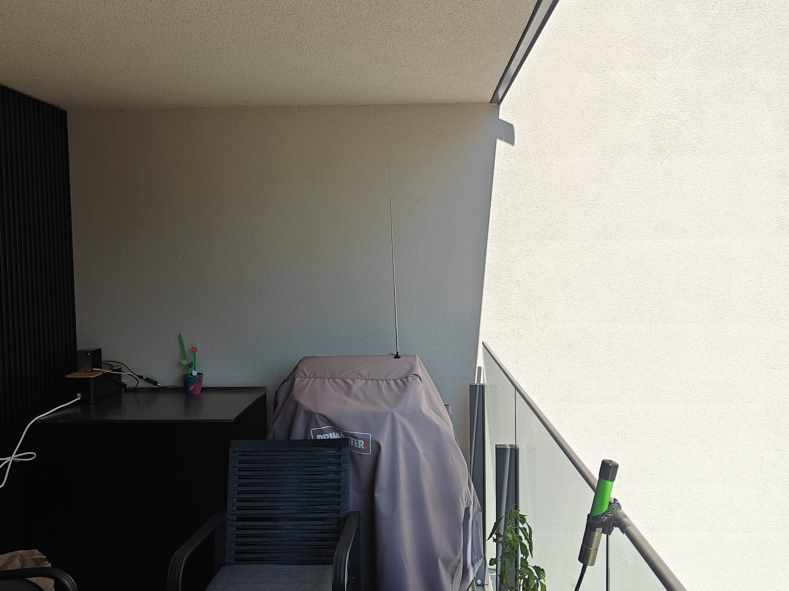

Home RF Station
Project started to gain knowledge in Radio Frequeny domain, together with the experience gained working for AIS and RF Geolocation missions.
Design Objectives
- The System shall be accessible with username and permissions.
- The System shall be accessible outside of the home LAN, without using Port Forwarding.
- The System shall be constantly monitored (Temperature and CPU load).
- The System shall detect and decode AIS messages.
- The System shall disply on a map the tracked signals.
- The System shall support and feed AIS Database available online.
- The System shall detect and decode ADSB messages.
- The system shall display on a map the tracked signals
- The System shall support and feed FlightRadar24 (to obtain the Contributor account).
- The System should also be capable of detecting ATC messages.
HW Architecture
- Rasperry PI 5, 4GB RAM
- 3x Software Defined Radio
- ADSB Dedicated 1090 MHz Antenna
- 2x Antennas (VHF range)
- USB Powered Hub
- Low Noise Amplifier
- ATC Bandpass filter
The Hardware is connected as listed:
Pi 5 - Powered USB Hub - SDR - SMA Cable - AIS Antenna (1m long)
Pi 5 - SDR - Filter - ATC Antenna (60cm long)
Pi 5 - Powered USB Hub - SDR - SMA Cable - LNA - ADSB Antenna (1090 MHz)
LNA can be moved in any receiving chain, but the highest gain in performance is within the ADSB Reception.
SW Architecture
- DebianOS (for the Pi 4)
- nginx
- Tailscale
- AIS-catcher
- Orbit Sailor forwarder
- Python (Pyais)
- readsb
- flightradar24 feeder
- tar1090
- rtl_airband
AIS
AIS Chain is handled with systemd processes. AIS-Catcher is a free SW that is available to read the AIS messages received with the SDR.
AIS-Catcher allows to regulate the gain and centre frequencies to maximize the messages reception.
AIS-Catcher is run with several outputs:
- port 8080 is standard to receive a visualization of the messages received with statistics automatically computed.
- Pi Memory for post processing
- port 10110 for forwarding output to OrbitSailor
- using -X with AuthKey to include AIS-Catcher in the data chain distribution
The Data received is analysed with another system process that update the AIS Messages database useful for statistics and plots.
ADSB
ADSB chain is handled with systemd processes. readsb is a free SW that allows to decode the receive ADSB messages, and generates in output
several .json files that can be post-processed for representation and statistics. readsb output is pipelined to tar1090 which is another free SW that
allows immediate representation of the detected planes.
Automatically with cronjobs the json are also processed to extract to a Database and statistics from the receive planes are produced:
- Number of planes tracked (last 24 hours)
- Number of planes tracked (last hour)
- Max distance tracked (last 24 hours)
- Max contact duration (last 24 hours)
- Luxair flights and aircrafts ever tracked
- Cargolux flights and aircrafts ever tracked
- Military planes ever tracked
- Overall Flights per Airline (Hystogram)
- Hystogram of number of planes detected last 24 hours - every hour
Additional statistics are produced with the usage of a free online database pingable through its api
https://api.adsb.com
The API is fed with the DB generated which is enriched with new data on planes tracked such as:
- Manufacturer
- Aircraft type
- Origin Airport
- Destination Airport
ATC
ATC chain is not continously operated and is based on shell scripts for activation and de-activation, while the post-processing is automated with a cron job.
The SW used is rtl_airband which is free and allows to set up a configuration file for specyfing sample frequency, centre frequency, antenna gain etc.
Once the data is recorded, every hour a .mp3 file is generated and processed with sox to clean the audio and providing a spectrogram for immediate visualization
of the file audio content.
Health Status Monitoring
Temperature and CPU Load
Temperature and CPU load are also monitored every minute to avoid overtemperature or overclock issues.
The Pi is connected to a smart plug that can be restarted remotely.
Tailscale is also used to have the Pi always accessible even outside the home network.